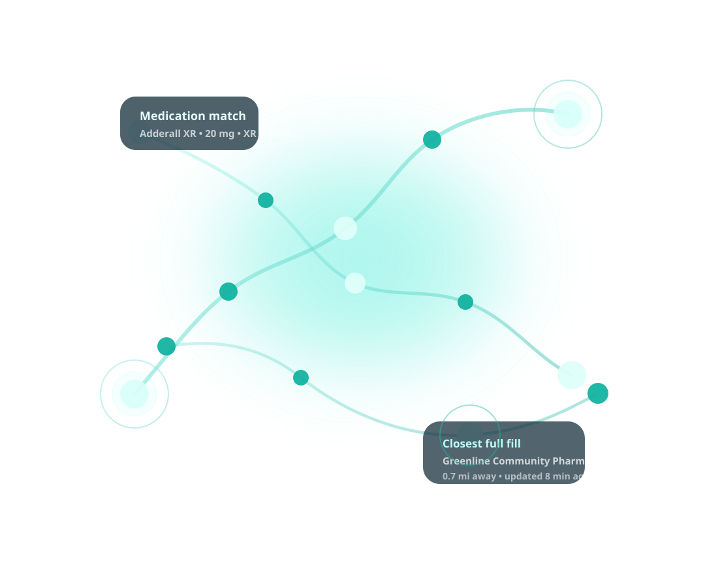

Medication, dose, and formulation stay visible from search to result.
Prescription access, clarified
Route one prescription to the pharmacy most likely to fill it today.
PharmaPath compares nearby pharmacies at the exact medication, dose, and formulation level so patients, clinics, and pharmacies can move past phone trees and toward the right handoff.
Distance, neighborhood, freshness, and fill status in one view.
Call, transfer, or reserve paths are obvious enough for a live demo.

Today's shortage scenario
Live mock inventory
Adderall XR
20 mg
XR capsule
1 full-fill match
within 2 miles
2 backup routes
before the patient leaves the call
Greenline Community Pharmacy
Williamsburg • 0.7 mi • updated 8 min agoWalgreens
Park Slope • 1.4 mi • 14 capsules availableNeighborhood Rx
Chelsea • 1.8 mi • nearby alternative doseBuilt for the handoff between patients, clinics, and pharmacies.
- Patients stop guessing which pharmacy to call next.
- Care teams surface likely fills while the patient is still on the line.
- Pharmacies get cleaner inbound requests tied to real inventory context.
Live demo
Show one prescription, several nearby outcomes, and the best next step.
The frontend runs on realistic demo inventory today, but the UI is organized around the real product decision: who can likely fill this prescription, how close are they, and what should the care team do next?
Workflow
Medication access fails in the details. PharmaPath makes those details usable.
Shortages rarely break at the brand-name level. They break at the exact dose, release type, and nearby inventory situation patients actually need.
Instead of “Who has this medication?” the care team can ask “Who has this exact prescription, how close are they, and what should we do next?”
That is the product story judges need to see.
One query, multiple nearby outcomes, and a recommendation that feels operationally useful instead of decorative.
-
01
Capture the exact prescription
Search by medication, then narrow by dose and formulation so the lookup reflects the actual fill request, not a rough brand-level proxy.
-
02
Compare the nearby availability story
Surface stock status, neighborhood, distance, and freshness together so the best likely fill stands out immediately.
-
03
Route the handoff with confidence
Promote the exact best match first, keep backup routes visible, and make the transfer or call decision feel obvious.
Value
Designed for the three people stuck in the prescription handoff.
Patients need confidence, clinics need speed, and pharmacies need inbound requests that already reflect real inventory context.
For patients
Less wasted time and fewer dead ends
Patients stop calling five pharmacies just to learn the XR version is unavailable while a nearby independent can likely fill it.
For clinics
Faster handoffs while the patient is still on the line
Nurses and office staff can recommend the most likely next move without bouncing between tabs, voicemail trees, and guesswork.
For pharmacies
Cleaner inbound demand tied to the real prescription
Pharmacies receive better-directed calls and transfer attempts because the request already includes the right dose and formulation context.
Exact prescription matching
Medication, dosage, and formulation stay anchored throughout the flow.
Nearby stock visibility
Distance, neighborhood, freshness, and status are visible at a glance.
Fallback routing
Backup routes surface when the best exact fill is unavailable or partial.
Demo close
Show the problem, the better route, and the business value in one pass.
Open with a shortage scenario, highlight the recommended pharmacy, and finish by showing how backup routes keep the handoff moving when exact inventory is thin.
One search instead of call trees
Better patient outcomes through faster access
Cleaner routing for clinics and pharmacies